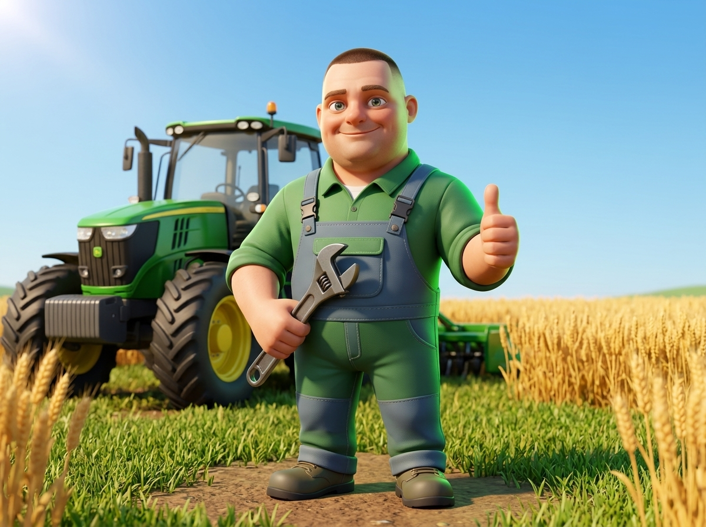
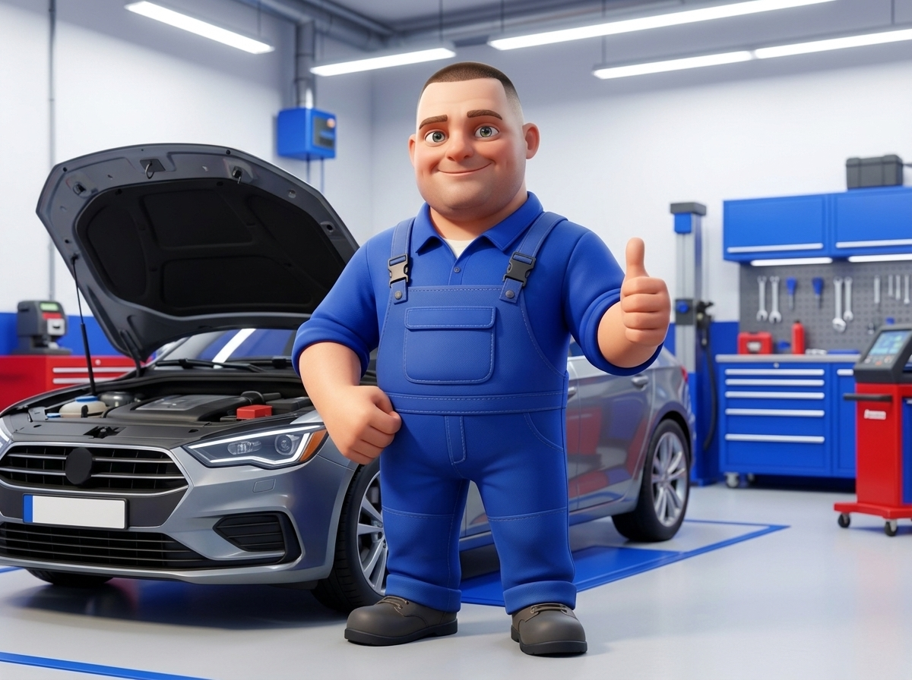
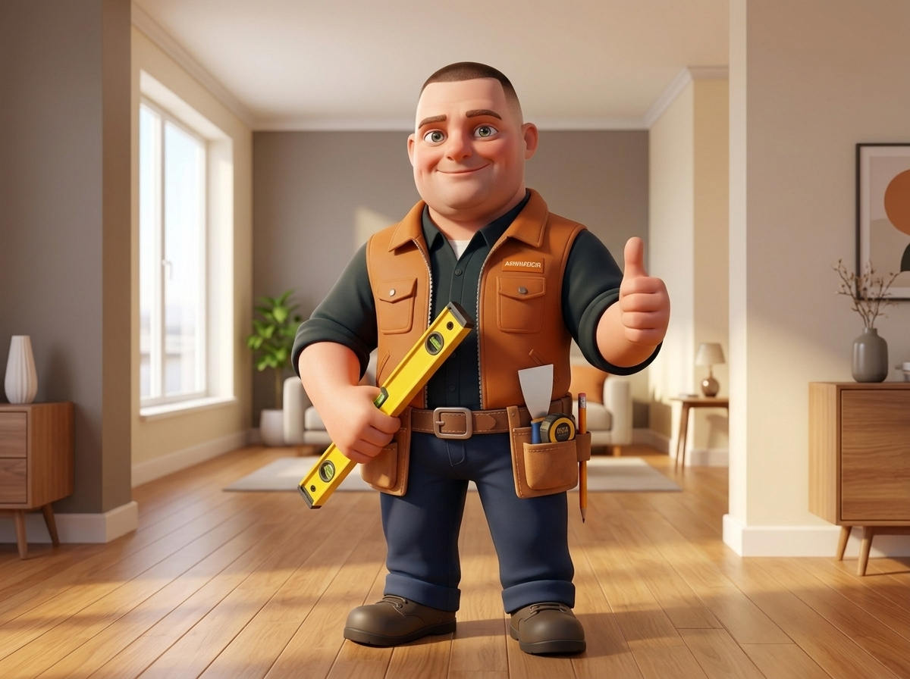
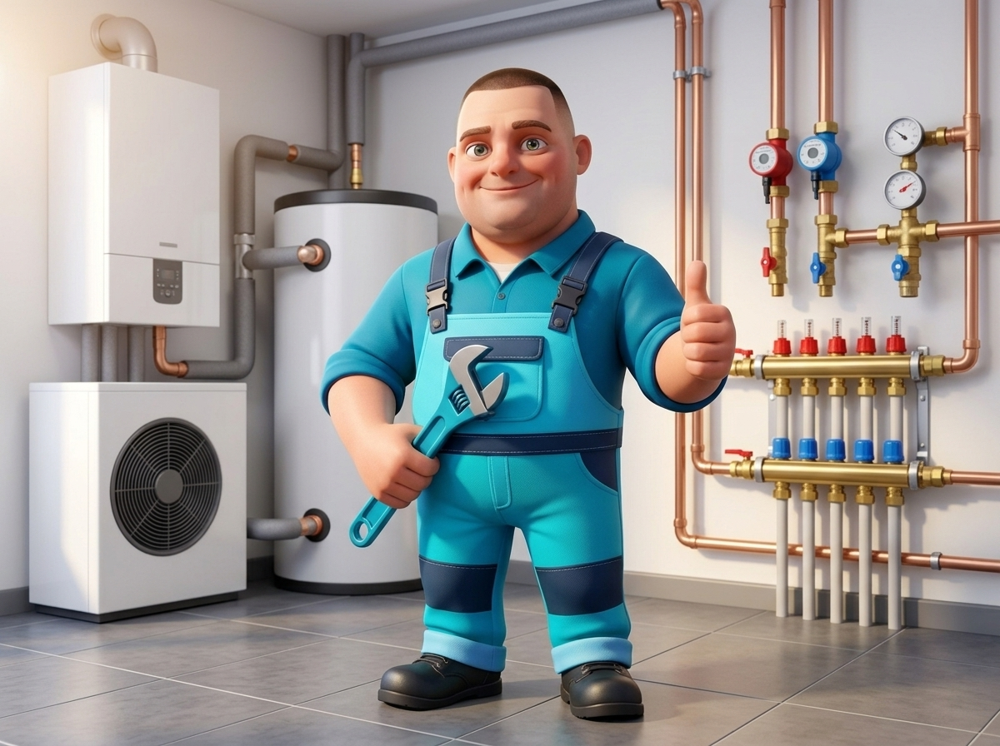
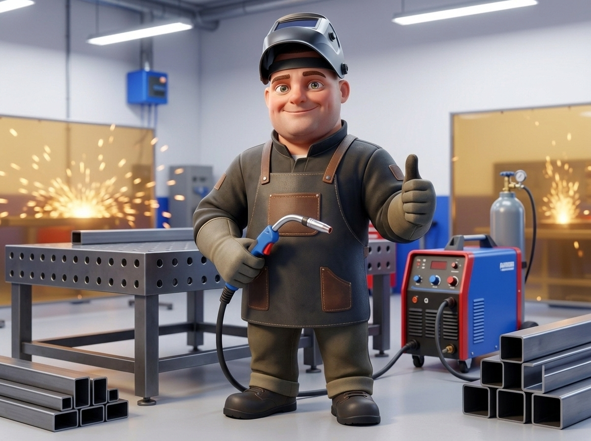
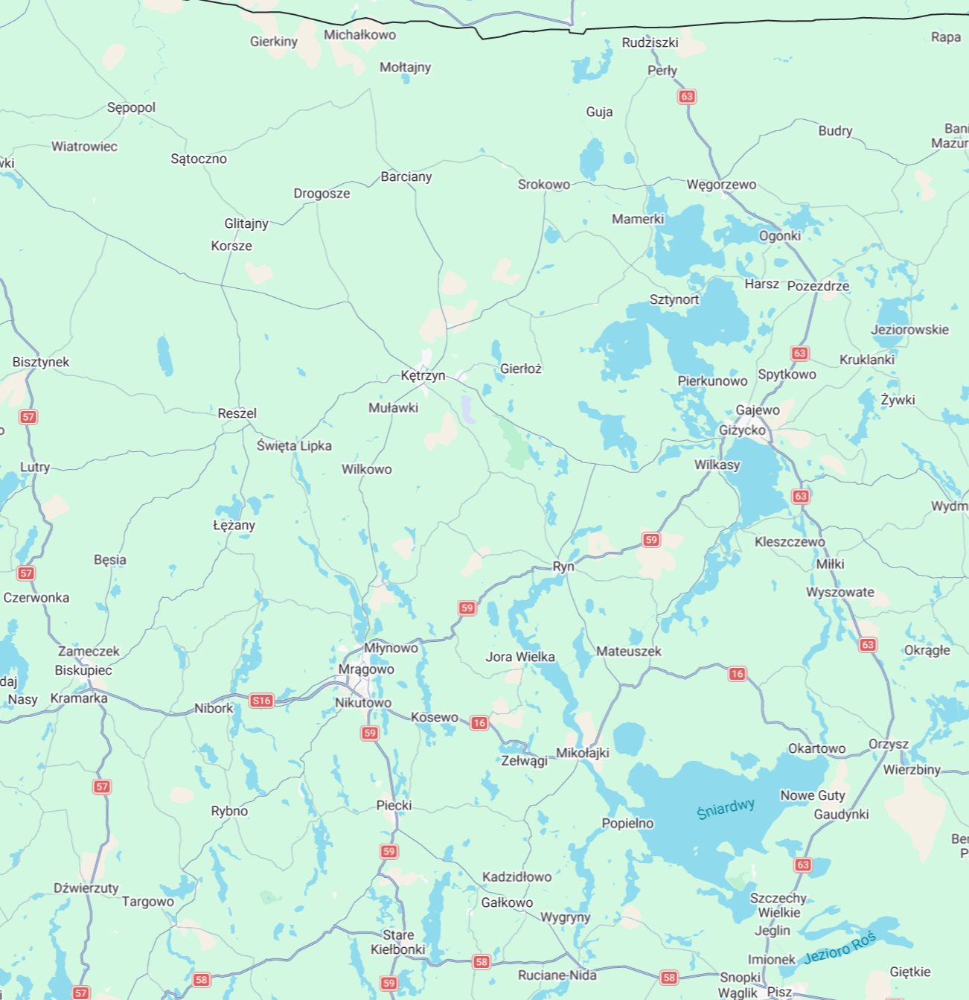

Jeden sprawdzony fachowiec – 5 konkretnych specjalizacji
Kliknij wybraną branżę poniżej, aby wyświetlić szczegółowy zakres usług, lub zadzwoń bezpośrednio: 695 525 389

Ciągniki Rolnicze
Naprawy silników, skrzyń, hydrauliki siłowej, pneumatyki oraz mobilny serwis na polu i w gospodarstwie.
✓ Aktywny widok poniżej
Mechanika Samochodowa
Bieżące naprawy, wymiana oleju, filtrów, hamulce, zawieszenie, rozrządy i diagnostyka komputerowa.
Zobacz ofertę ↓
Wykończenia & Remonty
Gładzie bezpyłowe, malowanie, układanie paneli, kafelkowanie, zabudowy G-K i remonty pod klucz.
Zobacz ofertę ↓
Hydraulika & Kotłownie
Nowoczesne kotłownie, pompy ciepła, instalacje wod-kan, podłogówka, biały montaż i usuwanie awarii.
Zobacz ofertę ↓
Spawalnictwo & Ślusarstwo
Spawanie MIG/MAG i TIG, naprawa pękniętych maszyn, konstrukcje stalowe, bramy, wiaty i dojazd w teren.
Zobacz ofertę ↓Oferta Usługowa
Profesjonalne wykonanie, sprawdzone części i uczciwe doradztwo.
Kętrzyn i okolice w promieniu ~50 km
Świadczę usługi z bezpośrednim dojazdem do klienta, na gospodarstwo oraz na pole. Szybka pomoc w nagłych awariach maszyn rolniczych, aut oraz przy pracach instalacyjnych i remontowych.
